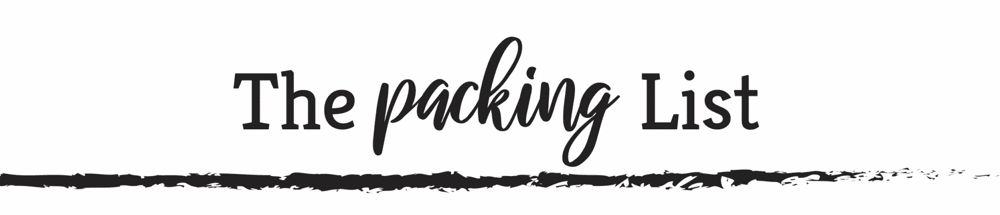

CamperRules
Essentials you need for your trip
RV packing List
Sometimes we just get up and want to go on a road trip. But doing things without careful thought can cause problems. Nobody wants to leave for a roadtrip and not have the essentials. So here are some lists of things to pack when you are going on the road.
- Towels, face cloths
- Laundry soap
- Tissues, bathroom tissue
- Short handled broom and dustpan
- Short handled mop/bucket
- Rags, shop towels
- Large and small garbage bags
- Dish cloth, towels, scrub pad
- Plastic washing bin
- Soap, shampoo, dish soap, laundry soap, pre soak.
- Cleaning solution (we use vinegar a lot)
- Hand sanitizer, hand wipes
-
Portable Propane Gas Grill , camp stove, grill for campfire cooking
Fuel for BBQ, stove, charcoal
Cooking utensils (flippers, grabbers, stirrers etc.)
Pot, pan, griddle
Coffee pot, teapot
Firewood
Firestarter, fat sticks
Long handled lighter, matches
Newspaper or other non-glossy paper (or Fatwood )
Weiner sticks, popcorn popper
Other campfire cooking tools
Skewers
Flame resistant gloves (We LOVE the Ove' Glove )
Oven mitts, pot holders
Table cloth, weights or clamps
Plates, bowls, glasses, mugs, go cups
Knives, forks, spoons
Knife, knife sharpener (or self sharpening)
Toothpicks
Mixing bowl
Bottle/can opener, corkscrew
Ice Chest , Ice
Timer
Plastic containers, zip lock bags
Foil, plastic wrap, wax paper
Napkins, paper towels
Can and bottle cozies
Wine glasses